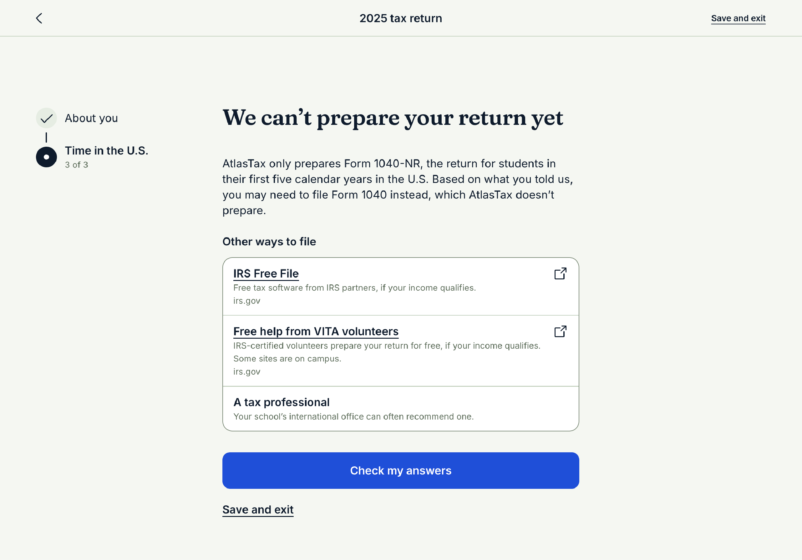
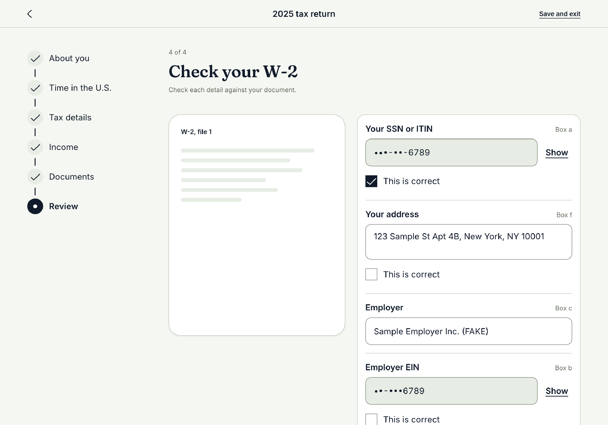
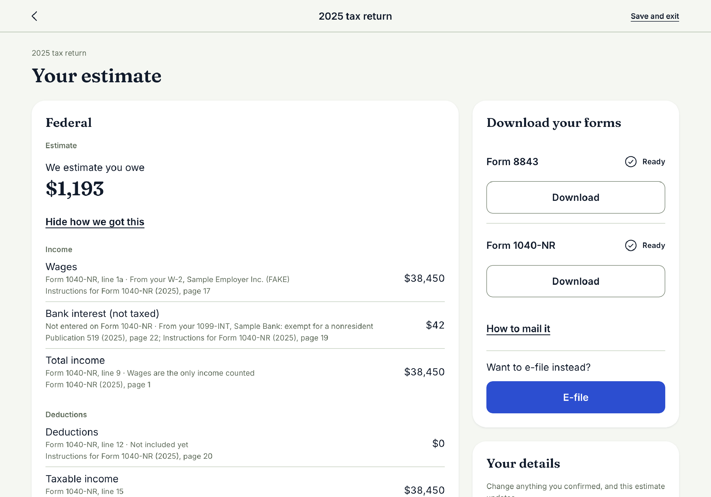
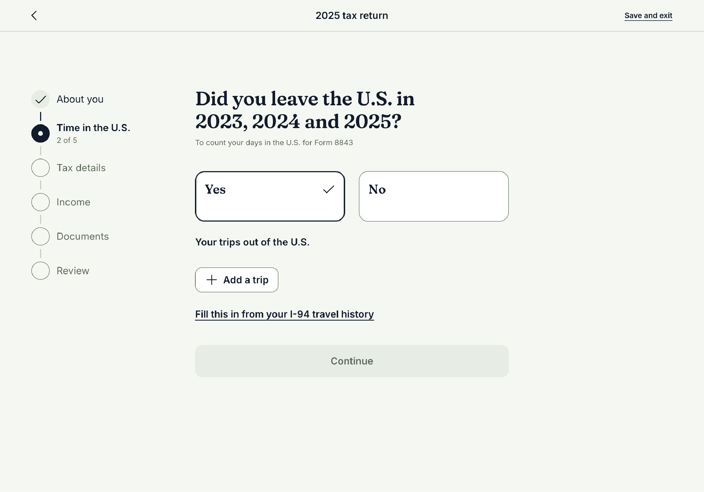
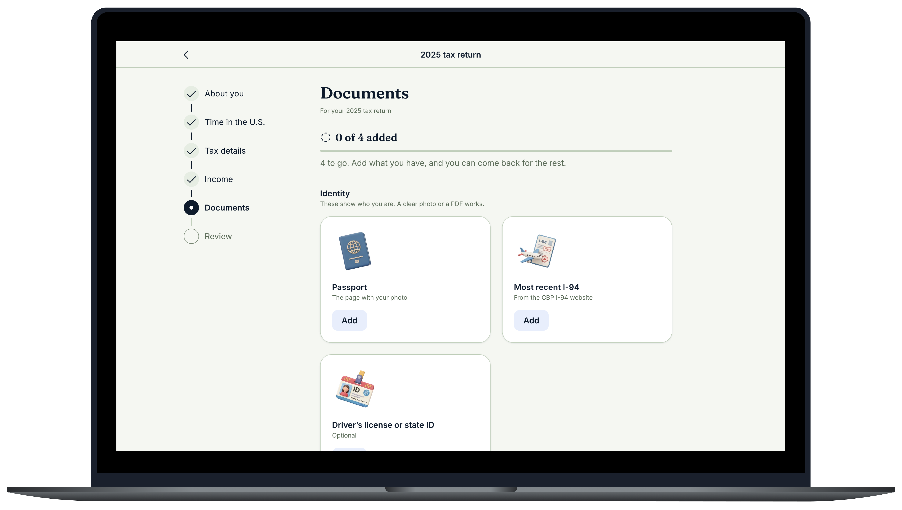
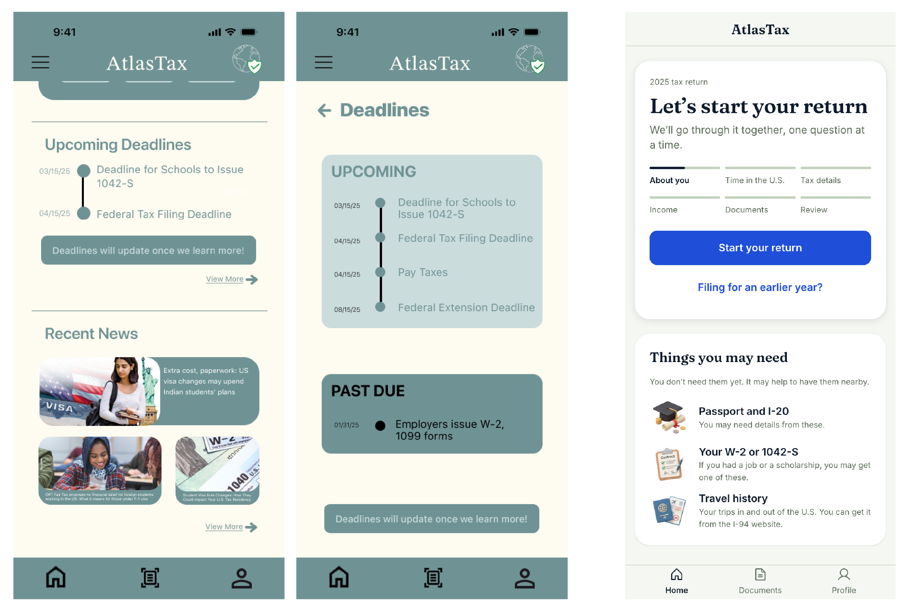
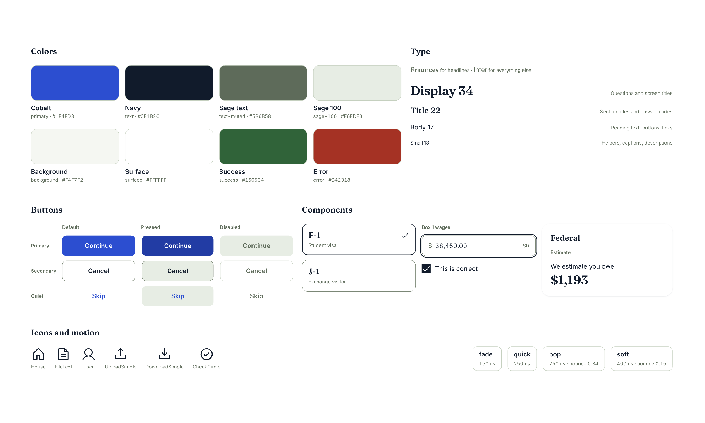
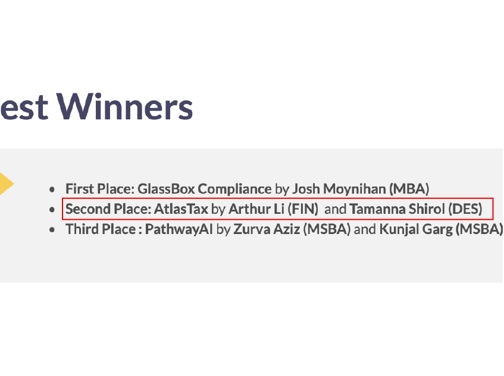
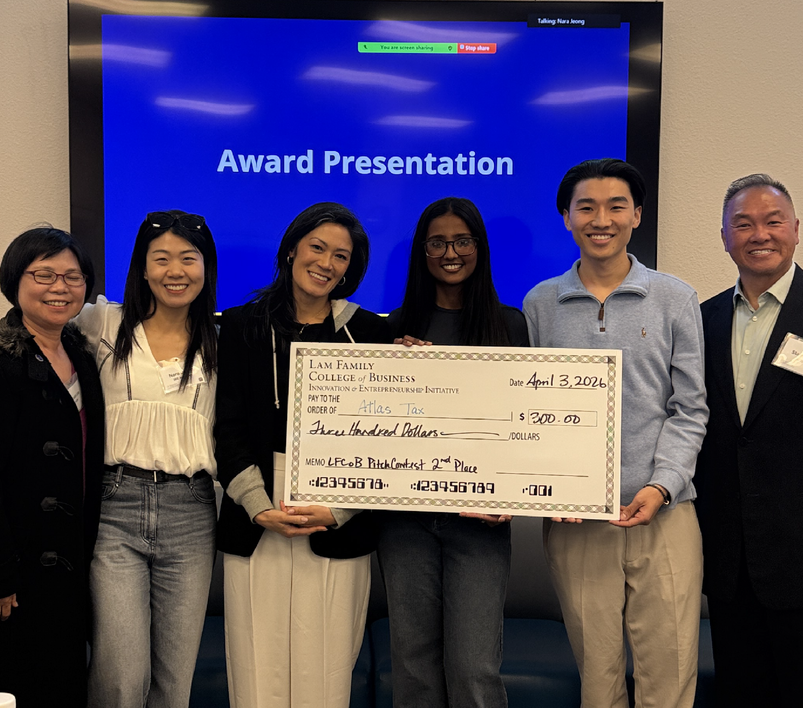
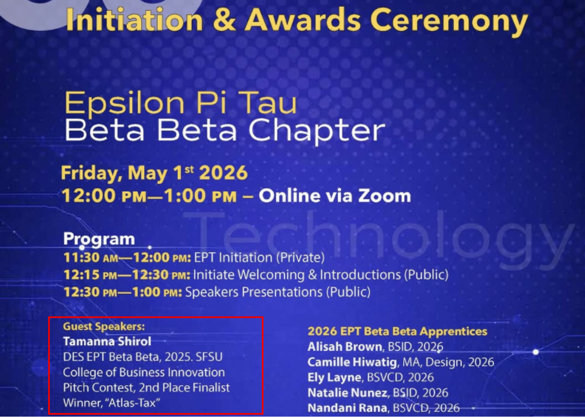

A U.S. citizen earning under $15,750 doesn’t need to file. An 18-year-old international student with zero income still does, and one mistake can jeopardize their visa, immigration applications, and future employment.
The system exists, just not for them. Residents have TurboTax. Non-resident students are left with confusion.
Initial research involved 12 interviews with F-1 and OPT students.
“It would be ideal to have a tax-filing experience where they know all the dos and don’ts, and we can just click submit.”
F-1 student interview“The hardest part of filing taxes is compiling all tax forms.”
Survey respondent“Sprintax does not consider my tax treaty. What happens when I graduate?”
OPT student interviewThe key moments from opening the app to closing it.
Onboarding sets expectations up front. You see the three steps, answer a few questions, add your documents, and get forms ready to file.
Asks about your full history in the U.S., from when you arrived to the income you earned, one plain-language question at a time.
Upload your forms and watch the app read them.
You confirm every value before it goes into a form.
See your results in plain numbers, with a clear breakdown of how each one was calculated.
This is where e-filing would happen. For now it's a concept, so nothing is sent to the IRS. You pick how you'd pay what you owe.
Delete everything, or just your tax forms and keep your ID documents for next year. Your documents go into a shredder, and "deleted" only shows once the files are really gone.

AtlasTax only files 1040-NR returns. If you’re outside that scope, it tells you at the start instead of letting you go through the whole flow.

The app reads your documents, then you check each extracted value yourself.

Every number traces back to a form line and page, so you can see where it came from.

We don’t strictly need every document, but each one means less typing and fewer mistakes. E.g: for travel dates, you upload your I-94 instead of hunting down every trip.
After watching how people file, I saw that filing means uploading sensitive documents and checking numbers line by line, and people do that kind of work on a laptop. So the main experience is now web, and the mobile version is still there.

So I cut them. Everything left on the screen is there to get the return filed.

Without shared colors, type and components, every screen was designed from scratch and none of them quite matched. I built the system first, then rebuilt the screens on top of it.

I designed the flow and the system, then built it with Claude Code from my Figma file, directing every screen and decision myself.
The tax rules are checked against IRS sources, and the build includes a working tax engine with tests and source citations. Everything in the prototype uses fake data.
These numbers are from the second round of usability testing. 15 F-1 students tested the prototype on their own and answered a survey. Testing was unmoderated, so these are what testers reported, not what I observed. Next: test beta at NYU in the January to April 2027 tax season.


